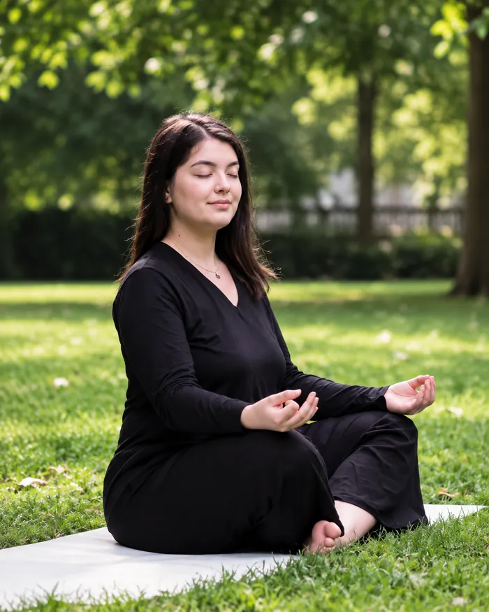

Hatha / Nidra Yoga · Bruxelles

Ergothérapeute de métier et professeure de yoga depuis 2023, Claire a toujours fait une place au mouvement dans sa vie. Elle découvre le yoga à l’âge adulte, d’abord en ligne, puis lors de retraites et d’événements. Après le Covid, elle ressent le besoin d’explorer ce qui se trouve au-delà des postures, notamment la philosophie du yoga. Cette curiosité la conduit à suivre une formation de 200 heures, avec l’envie d’enrichir son accompagnement auprès de ses patients. Elle complète son parcours par 10 heures consacrées à Surya Namaskar, la salutation au soleil, et 60 heures de formation en Yoga Nidra.
Depuis décembre 2024, Claire enseigne au Centre de Yoga Santosha (Bruxelles), où elle propose un cours entre femmes le lundi de 14h à 15h15. Chaque séance commence par un court temps de parole, pour celles qui souhaitent s’exprimer. Elle tient à créer un cadre où chacune puisse se sentir en confiance, parler librement ou simplement prendre un moment pour elle.
Son enseignement s’appuie principalement sur le Hatha Yoga, une pratique qui associe les postures, la respiration et la concentration. Dans ses cours, les postures sont parfois explorées dans la durée, parfois reliées dans des enchaînements plus fluides.
Le format d’une heure quinze permet d’aller au-delà des postures, de prendre le temps de la respiration et de consacrer 10 à 20 minutes à la relaxation en fin de séance. Une fois par mois, ce temps est prolongé avec 30 minutes de Yoga Nidra, une pratique de relaxation guidée.
Pendant ses cours, Claire intervient en tant que professeure de yoga. Son expérience en ergothérapie nourrit néanmoins son attention aux possibilités de chacune et sa manière d’adapter la pratique. Les débutantes sont les bienvenues et il est possible de rejoindre le groupe tout au long de l’année. En cas de blessure ou de handicap, elle invite à la contacter pour réfléchir ensemble aux adaptations qui permettraient de participer au cours.
Instagram : @bloomavecclaire
Contact :
contact@bloomavecclaire.com
Tél. : +33 6 11 09 90 95